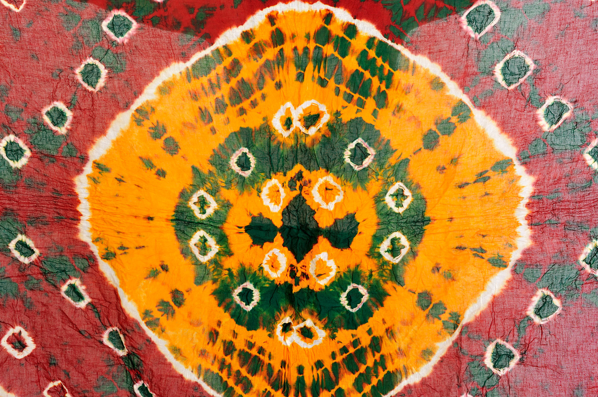

Bandhani feels like color captured in motion. Each tiny dot on the fabric is actually a tied knot, holding dye back—like moments being preserved in time. When the cloth is opened, it reveals patterns that feel almost magical, as if they appeared on their own. The romance here is joyful and celebratory. These fabrics are worn during weddings, festivals, and important life events, so they carry emotions of happiness, hope, and new beginnings. There’s something beautiful about how something so detailed and patient becomes a symbol of celebration and identity.
Bandhani is one of the oldest tie-dye techniques in India, practiced mainly in Gujarat and Rajasthan. • The word “Bandhani” comes from “bandh” meaning to tie • Dates back over 2000 years, with references in ancient texts • Traditionally used for wedding garments, especially for brides • Certain patterns and colors indicate community, marital status, or region In Gujarat, styles like Gharchola (grid pattern saree) are especially important in marriage traditions.
Bandhani is all about precision and patience: • Tie-Dye Technique Thousands of tiny points are tied with thread before dyeing • Layered Dyeing Process Cloth may be dyed multiple times to create complex patterns • Dot-Based Patterns • Leheriya (wave patterns) • Dots forming flowers, grids, or motifs • Bright Traditional Colors Red, yellow, green, blue—each with cultural meaning • Handcrafted Process Every knot is tied by hand → no two pieces are exactly the same
Bandhani is practiced by skilled artisans and communities in Gujarat, especially in regions like Kutch and Jamnagar. • Passed down through generations • Often a family-based craft • Requires teamwork—tying, dyeing, and finishing are sometimes done by different people Unlike painting, this is a textile art, where the fabric itself becomes the canvas.